Problem 1. Which of the following cannot be made to function with perfect reliability, assuming reliable components and connections. Explain your reasoning. Some of the specifications refer to "bounded time" which means there is a specified time interval, measured from the most recent input transition, after which the output is stable and valid.
-
 A circuit that in unbounded time indicates which of two game show
contestants pressed their button first.
It is possible to build this unbounded-time arbiter. It may take an arbitrary period, after which it will produce (1) a decision and (2) a signal that indicates that its made a decision.
A circuit that in unbounded time indicates which of two game show
contestants pressed their button first.
It is possible to build this unbounded-time arbiter. It may take an arbitrary period, after which it will produce (1) a decision and (2) a signal that indicates that its made a decision.-
A circuit that in bounded time indicates which of two game show
contestants pressed their button first.
This is a restatement of the "bounded time arbiter problem", known to be unsolvable in theory. In practice we can build a circuit to solve this problem where the probability of failure is related to tPD. For "large" tPD (eg, 10's of nanoseconds in today's technologies) the probability of failure can be made very small (eg, 1 failure in billions of years).
-
A circuit that determines if button A was pressed before a specified
deadline. Assume the circuit has an accurate internal signal that
transitions from 0 to 1 when the deadline is reached. The output
should be 1 if the button was pressed on or before the deadline, 0 if
pressed after the deadline. The output should be valid and stable
within a specified tPD of the A input transition.
This is another restatement of the "bounded time arbiter problem", known to be unsolvable in theory. Of course, given sufficiently long time bounds, we can engineer practical approximate solutions (see the answer to the previous question).
-
A circuit that in bounded time indicates which of two game show
contestants pressed their button first if the presses were more than
0.1 second apart, otherwise the circuit lights up a "TIE" light.
This circuit will suffer metastability problems because the decision as to whether the presses were 0.1 seconds apart is subject to metastability problems.
-
A circuit that in bounded time indicates that at least one button has
been pressed by some contestant.
An OR gate will do the job.
-
A circuit that in bounded time indicates that exactly one of the
contestants has pressed their button. You can assume there are only
two contestants.
An XOR gate will meet the spec.
-
A circuit that has two parts: (a) a subcircuit that indicates which of
two game show contestants pressed their button first, and (b) a
subcircuit that in bounded time lights a "TIE" light if the (a)
subcircuit hasn't produced an answer after 1 second. The "TIE" light
should stay lit even if (a) makes a decision at some later point.
Both subcircuits will suffer metastability problems. (a) is asking for an arbiter (see part B above) and (b) has the same difficulties as outlined for part C above.
-
A circuit that converts button presses from two contestants into the
following two-bit output encoding. The circuit has two inputs, A and
B, one for each contestant. A contestant's input transitions from 0
to 1 when she presses her button.
-
00 if neither contestant is pressing their button
01 if contestant A is pressing her button
10 if contestant B is pressing her button
11 if both contestants are pressing their buttonsEasy! The low-order bit of the encoding is the signal from A, the high-order bit is the signal from B. Nothing to go metastable here.
Problem 2. A judge is routinely given 60 seconds to make yes-or-no decisions. Which of the following techniques allows him to do it with perfect reliability, in light of the unrealizability of a perfect bounded-time arbiter?-
He can do it reliably simply by flipping a coin.
In theory the coin flip has its own metastability problem: the coin may balance on its edge and hence may not reliably produce an answer in the time required. Since the judge is depending on the coin, he may also not produce an answer in the time required. In general the mapping of any continuous input variable (eg, the position of the coin) into a discrete output value (eg, "yes" or "no") is subject to metastability problems if all input values have to be mapped in bounded time to valid output values.
-
He can do it reliably by asking his clerk and responding "yes" unless
his clerk has answer in 55 seconds.
The decision as to whether the clerk has answered in 55 seconds is subject to metastability problems, hence the judge may not respond reliably.
-
He can do it realiably by always answering "no", independently of
the question.
It's true the judge will always respond reliably. Ignoring the input is a valid (if not very satisfying) technique for solving the metastability problem.
Problem 3. Cambridge Logic and Magic, Inc is a new startup founded by a group of ex-MIT students who dropped out of 6.004 just before Lecture 8. They are trying to develop a reliable, bounded-time arbiter that behaves as follows: Two combinational inputs, A and B, each have a single 0-to-1 transition. The arbiter has a single output, which may be safely sampled one microsecond following the transition on the A input, at which point it is guaranteed (with 100% reliability) to have a valid logic level. If the A transition precedes the B transition by more than 100ns, the output is to be 0 when sampled; if the B transition precedes A by more than 100ns, the output is to be 1 when sampled. If the transitions are within 100ns of each other, either a 1 or a 0 may be present. In all cases, the output is stable and valid for a 10ns interval surrounding the time at which it is to be sampled. The four CLMI founders each have a proposed design for such an arbiter. Your job is to identify the problem in each design, citing a specific scenario in which it fails to meet its spec. [If you're unable to convince yourself that any scheme doesn't work, perhaps you should consider dropping out and starting a company!] Assume in the following designs that (1) All registers start in the 0 state; (2) that transitions on each of the input signals are instantaneous and surrounded by long setup and hold times; and (3) that component timings are short compared to the one microsecond delay.-
The first scheme involves a D register and a lenient MUX. It's
proponent argues that it can't go metastable, since the dynamic
discipline is always obeyed on the register inputs.
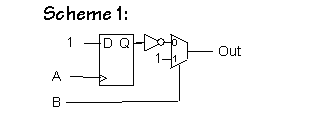 It's true that this circuit has no metastability problems, but it gets the wrong answer. Suppose the A transition happens more than 100ns before the B transition but the output is sampled after the B transition has arrived and propagated through the MUX. Under this situation the output will be a 1 when it is supposed to be a 0.-
The second scheme involves a 50ns delay and a lenient OR gate. If the
output of the register is metastable, the inventor argues, the gate's
output will be forced to a valid level by the delayed copy of A. The
delay is 50 ns.
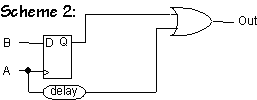 This circuit also has no metastability problems, but it too gets the wrong answer. Suppose the A transition happens more than 100ns before the B transition. Since the output is sampled one microsecond after the A transition happens, that transition will have enough time to propagate through the delay and through the OR gate. Since the OR gate is lenient it will output a 1 regardless of what the input from the register is (even if the register is metastable). Thus, regardless of which signal arrives first, the output will always be a 1. But the output should be 0 when A happens at least 100ns before B.-
The third scheme involves a pair of D registers sharing the B input.
The delay is 50 ns, a time chosen to ensure that if setup/hold times
are violated for either of the registers the other will see valid
input timing. The OR gate is lenient.
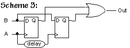 This scheme fails when the B transition happens 50ns after the A transition. In this situation the first register will output a 0 since the rising edge of the A signal arrived before B transitioned from 0 to 1. However, in the second register, the D input arrives at the same time as the clock. Thus the register may become metastable and generate an invalid output. So the OR gate receives a 0 input from the first register and a potentially invalid input from the second register. Thus the OR gate may also generatate an invalid output.-
The fourth scheme involves a pair of D register and a delay similar
to Scheme 3, but uses a MUX to select the output from a non-metastable
flipflop:
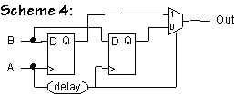 Since the output is sampled 1 microsecond after the A transition happens, the transition as enough time to propagate through the delay, into the MUX where it switches MUX to output the result of the first register. Thus the circuit effectively consists of the first register. If the A transitions happens at the same time as the B transition, then first register may be metastable and may generate an invalid output, causing the MUX to generate an invalid output.
Problem 4. Ben Bitdiddle has been hired as a consultant by Two Bit Electronics, a firm specializing in communications channels that are two bits wide. TBE has discovered that its latest product has been failing now and then at various customer sites and is worried that the design may have a problem with metastability. Ben starts by checking the schematics for one bit of the transmission channel: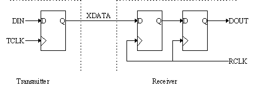 -
A TBE engineer explains that although TCLK and RCLK have the same
frequency, their phases may differ. Ben notes with approval the 2
D-registers in the receiver, which are configured as a pulse
synchronizer, a circuit intended to ensure that the probability of
DOUT entering the metastable state is very small. Briefly explain how
the pulse synchronizer accomplishes this goal. Hint: Because the
input to the receiver is asynchronous with RCLK, the left-most
register in the receiver can enter a metastable state. But the
probability that the input to the right-most register in the receiver
does not meet that register's setup time can be made as small as
desired by increasing the period of RCLK. Why?
Whenever we create a circuit that has an input generated by a system running with a different clock (or no clock at all), we run the risk of entering a metastable state in our registers that use this input. This can happen since the asynchronous input could be transitioning during the period of time before and after the rising clock edge that a register requires the input to be stable. However, the longer a signal stays in a positive-feedback storage element (like those in a register), the more likely it is to leave the metastable state and yield a valid output level. By chaining registers together, we increase the amount of time during which the signal stays in a positive-feedback loop before we use its value in our logic.
-
The engineer now shows Ben the schematic for a test jig that he says
illustrates the problem that's been discovered. The test jig consists
of two one-bit channels running in parallel with the two DIN inputs of
the transmitter connected to a single data stream. The DOUT outputs
of the two receivers are connected to an XOR gate that, in theory,
should always produce a "0" since both receivers are getting the same
data stream. In order to filter out any glitches in the XOR output
introduced by small differences in tPD of the output registers of the
two receivers another register has been added to the output of the XOR
gate:
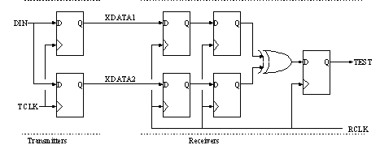 Every once in a while TEST is observed to be "1" for one period of RCLK. Give a brief explanation of why this happens. You can assume that DIN is meeting the setup time of the transmitter registers and that the value for DIN changes much less frequently than TCLK/RCLK. Hint: it has nothing to do with the register that was added to deglitch the TEST output. Think about what's happening in the two pulse synchronizers and why they might generate different outputs for a single clock cycle.A first-look at the test jig seems to imply that DOUT should always be 0, since XDATA1=XDATA2. However, when a register enters a metastable state, we don't know which value the output will eventually reach. Thus, if one or both of the registers enters a metastable state, its output could be either 0 or 1. Thus, the output of the two registers could be different causing the XOR gate to generate a 1.-
TBE now realizes that their plan to send two bits at a time by using
two independent synchronizers won't work. "Okay," they say, "we'll
just transmit one bit at a time, use a single synchronizer and crank
up the clock frequency." Ben observes that this circuit still won't
result in completely accurate communication, i.e., the waveform
produced by the receiver on DOUT still won't be the same as the
waveform produced by the transmitter on XDATA. Give a brief
explanation of why Ben is right.
Pulse synchronizers can be used to solve metastability problems arising from asynchronous inputs but the synchronization process introduces changes in the timing of the data waveform. All transitions in the bit stream output by the synchronizer will happen on the rising edge of the receiver clock, and hence the timing between transitions will be some multiple of the receiver clock period. If there was information carried by the timing of transitions in the transmitted bit stream, it's lost (or at least garbled) by the synchronizers.
-
Ben explains that communications between asynchronous systems is a
tricky business! If the input stream isn't too fast compared to the
receive clock, a pulse synchronizer will reliably reproduce any
transitions in the input waveform, although the exact timing between
the transitions in the output waveform will not the same as in the
incoming waveform.
[Hard] Can you think of a way to encode a bit stream using
transitions rather than levels to convey the information? Describe
your encoding scheme and the signals that would be output by your
receiver.
Manchester encoding can be used to transmit a stream of bits over a single data wire, with no auxiliary clock information. Each bit is represented by one of the following patterns, where T is the period of the clock used to encode the signal. Note that a Manchester-encoded signal always changes value in the middle of each bit cell. 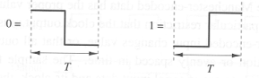 A block diagram of a Manchester decoder is shown below. The decoder is a clocked sequential machine whose state memory consists of just two edge-triggered D flip-flops. 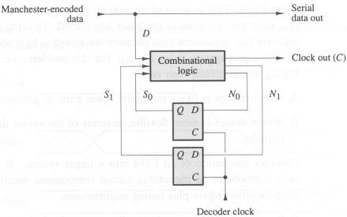 The combinational portion of the decoder has as inputs the Manchester-encoded signal and the current state of the two flip-flops. The combinational logic outputs the next state N1 and N0 for the two flip-flops and the clock signal C generated for the stream of serial data. The truth table of the combinational logic is as follows: 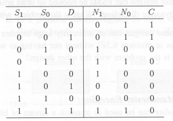 Note that the serial data out from the decoder is just a copy of the Manchester-encoded data in. Thus the decoder must place positive transitions in its clock output C timed to correspond to the correct logic values already present in the Manchester-encoded stream. The positive-going edge of each clock pulse must occur while the Manchester-encoded data has the proper value for the serial output; but there is no particular restriction that the clock output must return to zero before the Manchester-encoded input changes value, or that all output clock pulses be of the same duration or evenly spaced in time. The sample timing diagram below shows an original stream of serial input data and its clock, the result of Manchester-encoding that stream, and a clock output waveform that meets the conditions stated. (This is not intended to imply that the specific "clock out" signal shown would actually be generated by the above circuit.) 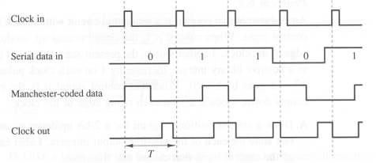 The period of the "decoder clock" that drives the D flip-flops need not be T; in general, it will be faster.
Problem 5. 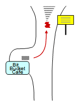 From the weekly Campus Police report: Ben Bitdiddle left the Bit Bucket Cafe and approached the nearby fork in the road. He hits the barrier in the middle of fork, later explaining "I can't be expected to decide which side of the fork to take in bounded time!."-
Is the accident Ben's fault?
If Ben must drive at some constant speed (e.g., 55 MPH) and detects a fork at some fixed distance d ahead of him, there is indeed a bounded-time arbitration problem: he must decide whether to steer left or right in the time it takes to travel the distance d at his constant speed. Unfortunately for Ben, however, the "6.004 defense" doesn't hold water: assuming d is sufficently large, he can come to a full stop before reaching the fork. He can then sit idle for an arbitrarily long time, and procede only after he has made his left/right decision.
Problem 6. 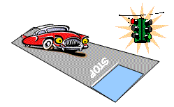 Here's an everyday situation: you have a traffic intersection controlled by a traffic light with the normal green, yellow, red sequence. There's a 55 MPH speed limit and the yellow and green periods of the traffic light are sufficiently long. I.e., the yellow is long enough to ensure that a car traveling at or below the speed limit can come to a halt before the stop line, and the green is long enough to ensure that a car stopped at the stop line can accelerate and cross the intersection before the green period is over. The car is supplied with digital GREEN, YELLOW and RED inputs from the traffic light and also has an analog POSITION input giving the distance from the stop line. The car's controller produces a digital GO output that controls the motion of the car. The car is is expected to behave reasonably -- e.g. to make normal progress in the absence of a red light.-
Is it possible to build a controller that reliably obeys
Law #1: "don't cross the stop line when the light is red"?
If we model the car as a point (i.e., infinitesimal in size) and the stop line as having zero width, there is a simple solution: the combinational logic GO = GREEN will ensure the car doesn't cross the stop line when the light is red. With this scheme, the probability of the car coming to rest exactly on the stop line is vanishingly small. The car will exhibit slightly bizarre behavior when approaching the light -- eg, stopping before the stop line -- but Law #1 will be obeyed.
-
Is it possible to build a controller that reliably obeys
Law #2: "don't be in the intersection when the light is red"?
No. Such a controller consitutes a solution to the bounded time arbitration problem; hence it cannot be made to work reliably using continuous physics. What makes the arbitration problem unsolvable is the possibility of continuous inputs that get us arbitrarily close to a decision threshold -- e.g. the "did A come before B" distinction. We avoid these cases most of the time via "forbidden zones" (in voltage or time, respectively) established by our static and dynamic disciplines; but in the case of asynchronous inputs to a clocked device, we have no "forbidden zone" in the relative timing of the asynchronous inputs. A controller that behaves as described above provides a forbidden zone surrounding the intersection that it promises to avoid whenever the light is red. We use this arbitrate between the asynchronous inputs A and B by using A to control the timing of the car's approach to the intersection, and B to control the timing of the GREEN->ORANGE->RED light sequence. The idea is that, if A is sufficiently early with respect to B, the car will travel thru the intersection before the light turns red; but if A is late with respect to B, the light will turn red before the car reaches the intersection. In either case, when the light becomes red the car will be outside of the intersection The finite width of the intersection amounts to a forbidden zone that allows us to reliably determine which side the car is on within bounded time. Since we can construct a reliable asynchronous arbiter given the specified controller, we conclude that the controller cannot be built. A sketch of our construction follows. We presume a controller whose inputs include the (continuous) position of the car and the discrete GREEN/ORANGE/RED state of the light, and whose output is a GO (accellerate) signal. We provide a simulated car at some fixed distance D from the intersection and having zero initial velocity. The simulated car will accellerate up to the speed limit so long as A=GO=1, and decellerate to a speed of zero otherwise; hence the simulated car is motionless until the positive A transition, after which it is free to move toward the intersection. Thus the timing of the A transition controls the timing of the car's approach. A positive transition on B changes the light from GREEN to ORANGE; after a prescribed constant interval, it changes from ORANGE to RED. Thus the B transition dictates the timing of the light. If the controller works properly, it will stop the car before the intersection if B comes sufficiently early or after the intersection if B comes sufficiently late relative to A. And, whatever the timing of A and B, the controller guarantees that the car will not be in the intersection once the light turns red. An analog comparator can therefore make a reliable bounded-time determination of which side of the intersection the car is on once the light is red, providing the arbiter's output. The time between the B edge and the red light is the constant ORANGE interval (perhaps plus a few gate delays), giving a bounded propagation delay between B and the output. If desired, the implementation can also bound the propagation delay from the A edge to valid output by detecting when the car has passed thru the intersection and -- for example -- forcing B to one at that point.
-
Is it possible to build a controller that reliably obeys
Law #2: "don't be in the intersection when the light is red"?
-
Is it possible to build a controller that reliably obeys
Law #1: "don't cross the stop line when the light is red"?
-
Is the accident Ben's fault?
-
Ben explains that communications between asynchronous systems is a
tricky business! If the input stream isn't too fast compared to the
receive clock, a pulse synchronizer will reliably reproduce any
transitions in the input waveform, although the exact timing between
the transitions in the output waveform will not the same as in the
incoming waveform.
[Hard] Can you think of a way to encode a bit stream using
transitions rather than levels to convey the information? Describe
your encoding scheme and the signals that would be output by your
receiver.
-
TBE now realizes that their plan to send two bits at a time by using
two independent synchronizers won't work. "Okay," they say, "we'll
just transmit one bit at a time, use a single synchronizer and crank
up the clock frequency." Ben observes that this circuit still won't
result in completely accurate communication, i.e., the waveform
produced by the receiver on DOUT still won't be the same as the
waveform produced by the transmitter on XDATA. Give a brief
explanation of why Ben is right.
-
The engineer now shows Ben the schematic for a test jig that he says
illustrates the problem that's been discovered. The test jig consists
of two one-bit channels running in parallel with the two DIN inputs of
the transmitter connected to a single data stream. The DOUT outputs
of the two receivers are connected to an XOR gate that, in theory,
should always produce a "0" since both receivers are getting the same
data stream. In order to filter out any glitches in the XOR output
introduced by small differences in tPD of the output registers of the
two receivers another register has been added to the output of the XOR
gate:
-
-
The fourth scheme involves a pair of D register and a delay similar
to Scheme 3, but uses a MUX to select the output from a non-metastable
flipflop:
-
-
The second scheme involves a 50ns delay and a lenient OR gate. If the
output of the register is metastable, the inventor argues, the gate's
output will be forced to a valid level by the delayed copy of A. The
delay is 50 ns.
-
-
-
-
-
A circuit that converts button presses from two contestants into the
following two-bit output encoding. The circuit has two inputs, A and
B, one for each contestant. A contestant's input transitions from 0
to 1 when she presses her button.
-
A circuit that has two parts: (a) a subcircuit that indicates which of
two game show contestants pressed their button first, and (b) a
subcircuit that in bounded time lights a "TIE" light if the (a)
subcircuit hasn't produced an answer after 1 second. The "TIE" light
should stay lit even if (a) makes a decision at some later point.
-
-
A circuit that in bounded time indicates that at least one button has
been pressed by some contestant.
-
A circuit that in bounded time indicates which of two game show
contestants pressed their button first if the presses were more than
0.1 second apart, otherwise the circuit lights up a "TIE" light.
-
A circuit that determines if button A was pressed before a specified
deadline. Assume the circuit has an accurate internal signal that
transitions from 0 to 1 when the deadline is reached. The output
should be 1 if the button was pressed on or before the deadline, 0 if
pressed after the deadline. The output should be valid and stable
within a specified tPD of the A input transition.
-